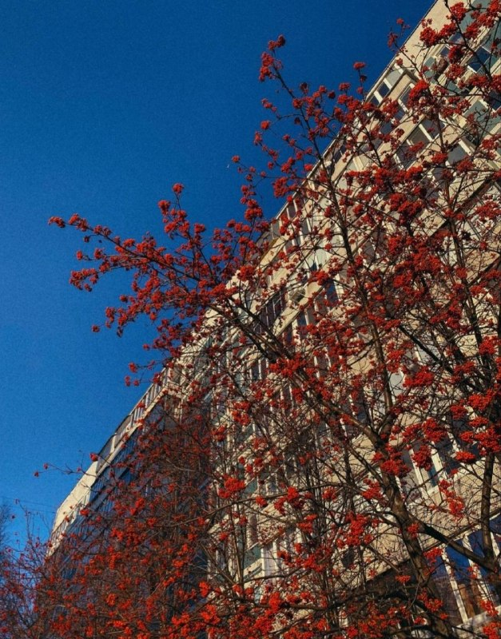
01
Общество и городская среда · событие дня

Изменения в руководящих партийных органах – важная часть развития «Единой России».…
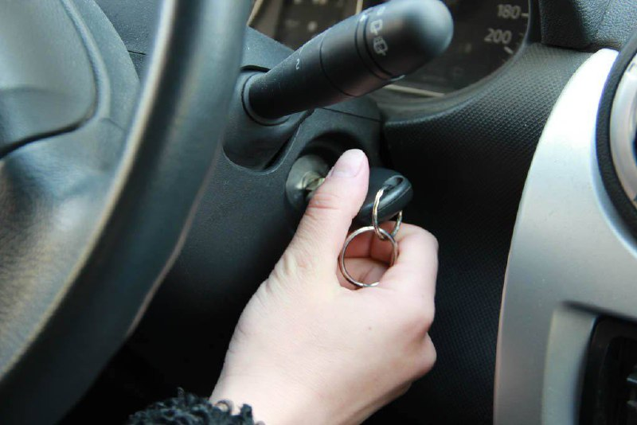
Президент РФ Владимир Путин дал понять, что окончание СВО приближается.…
В Ульяновске завершили асфальтирование поворотных участков и примыканий Спасской к Ленина, Радищева и бульвару Пластова, сообщает мэрия.…
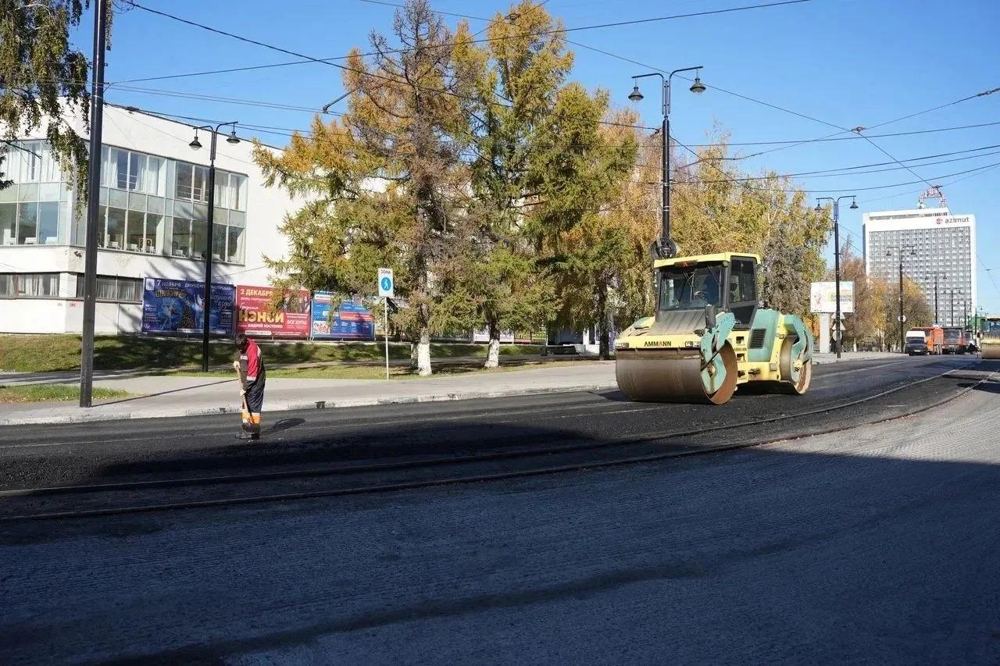
Президент посетил торжественное собрание, посвящённое десятому съезду и 150-летию Союза театральных деятелей.…
По поручению главы города Александра Болдакина непрерывный контроль за работами по устройству дорожного покрытия, объёмами и качеством укладки асфальта вели специалисты Управления дорожного хозяйства.…
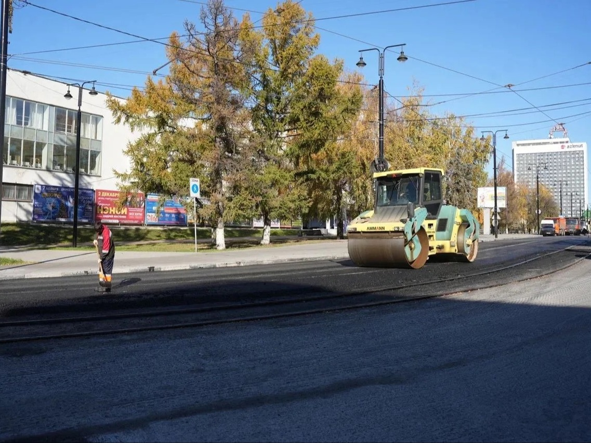
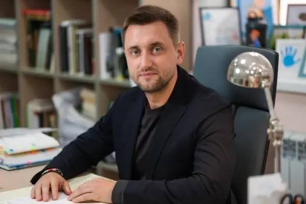
Телевизор без перерыва записывает аудио из комнаты, сканирует всё, что происходит на экране, проверяет домашнюю сеть Wi-Fi и подключенные к ней устройства, сохраняет геопозицию и IP-адрес.…
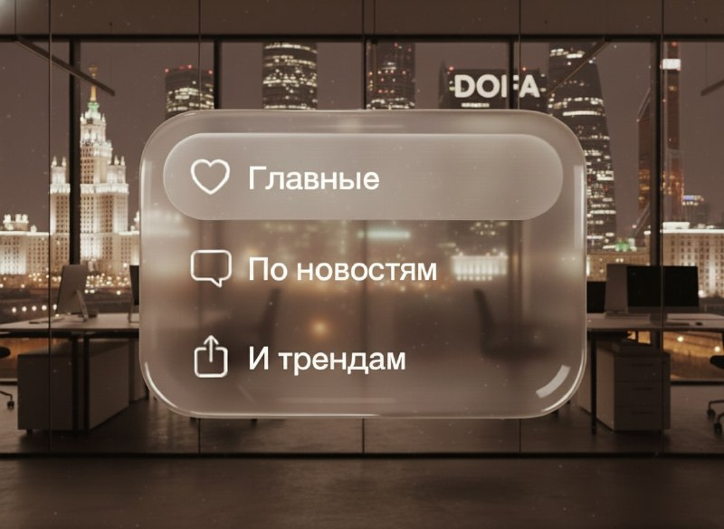
Подать заявку на III сезон Национальной литературной премии «Слово» можно до 31 октября.…
22-летний Akmal' уже признан настоящим открытием российской поп-сцены.…
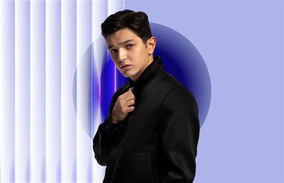
Муниципальное бюджетное учреждение «Дорремстрой» вывело на обслуживание дорожной сети Ульяновска два новых экскаватора, приобретенных за счет региональной финансовой поддержки по решению губернатора Алексея Русских, — об этом главе города Александру Болдакину доложил руководитель предприятия Эдуард Чумуркин.…
Славского с участием главы города Сергея Сандрюкова, представителей бизнеса и экспертов.…
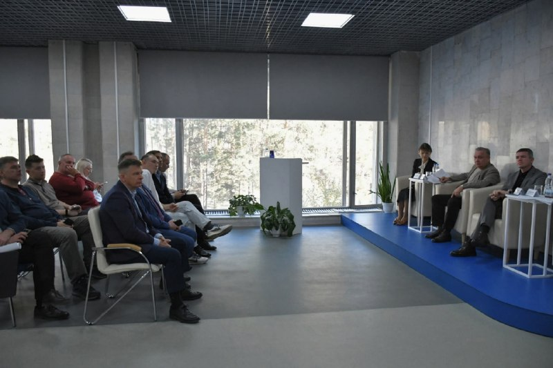
Разбираемся , на что еще выросли цены и кто от этого «выигрывает».
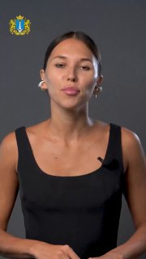
Медицинские работники возглавили рейтинг самых благородных, честных и самоотверженных профессий 2026 года по мнению 28% жителей Ульяновска — результаты опроса экономически активного населения обнародовал сервис по поиску работы SuperJob.…

У самого отделения рентгенологии собираются большие очереди по утрам.…
Это лишит компанию права в дальнейшем участвовать в госзакупках.…
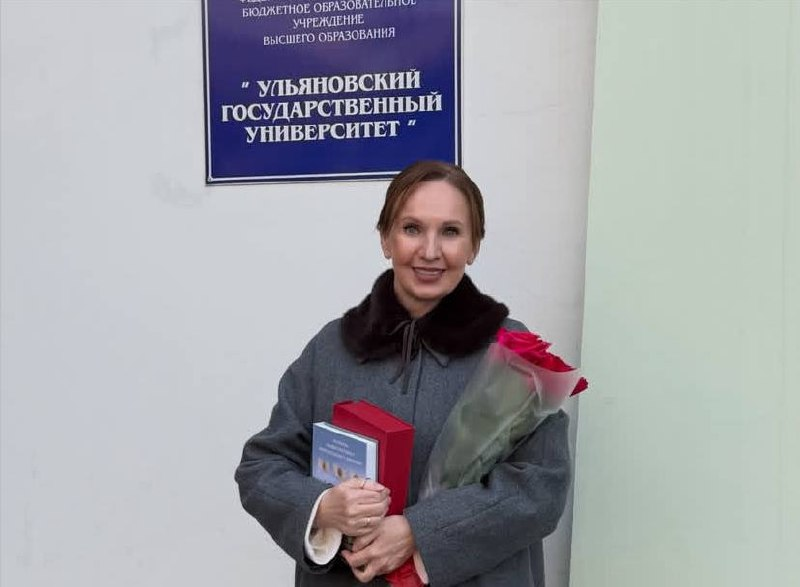
Елена Ежова займётся преподаванием этой дисциплины в Ульяновском государственном университете.
Будущие абитуриенты могут забронировать места заранее. Зачем? — Всего 1 группа на направление — мест на всех не хватит.…
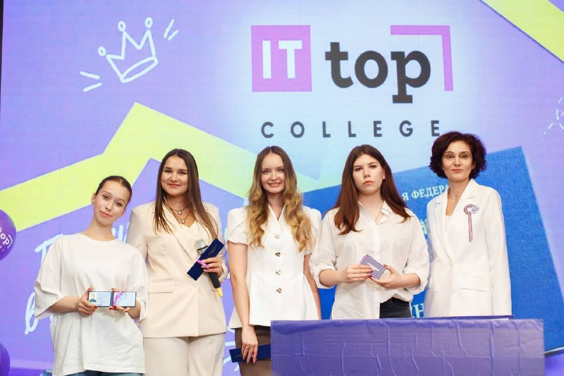
Ульяновский ресторатор и предприниматель Елена Ежова будет преподавать в УлГУ: в ноябре вместе с деканом экономического факультета Мариной Чувашловой она запустит курс «Основы предпринимательского мышления», рассказала Ежова в соцсетях.…
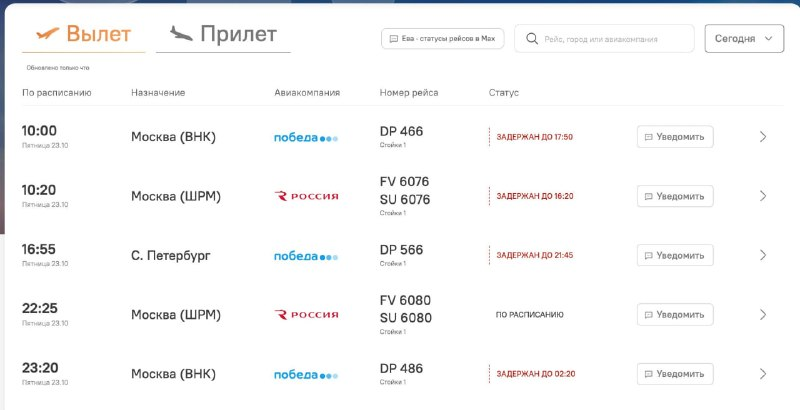
Утренние вылеты перенесли на вечер, а ночные — на субботу. Причиной сбоя стали два временных закрытия воздушного пространства над Ульяновской областью.…
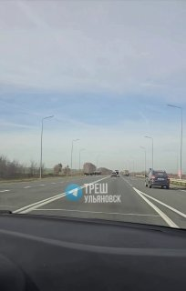
Сбой вызван двойным закрытием воздушного пространства над Ульяновской областью, которое Росавиация вводила утром и днем в целях безопасности полетов.…
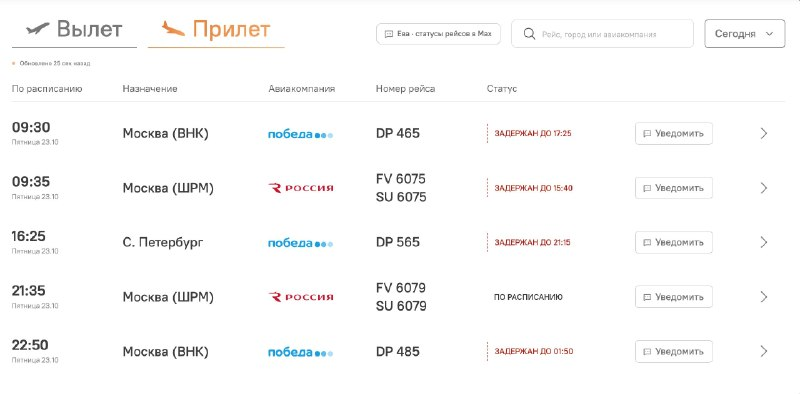
В ульяновском аэропорту Баратаевка произошел масштабный сбой в расписании с задержками рейсов до восьми часов — об этом свидетельствуют данные онлайн-табло воздушной гавани на пятницу, 23 октября.…
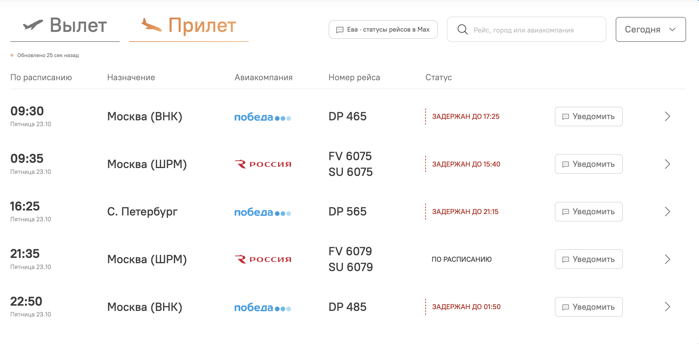
Кроме того, скидки в 25%, согласно инициативе, не будет даже при оплате в течение 30 дней.
Возбуждено уголовное дело, избрана мера пресечения — подписка о невыезде.
Ссылка ведёт на фишинговый сайт. Власти предупреждают: в Ульяновской области подобных мероприятий на эту дату не запланировано.…
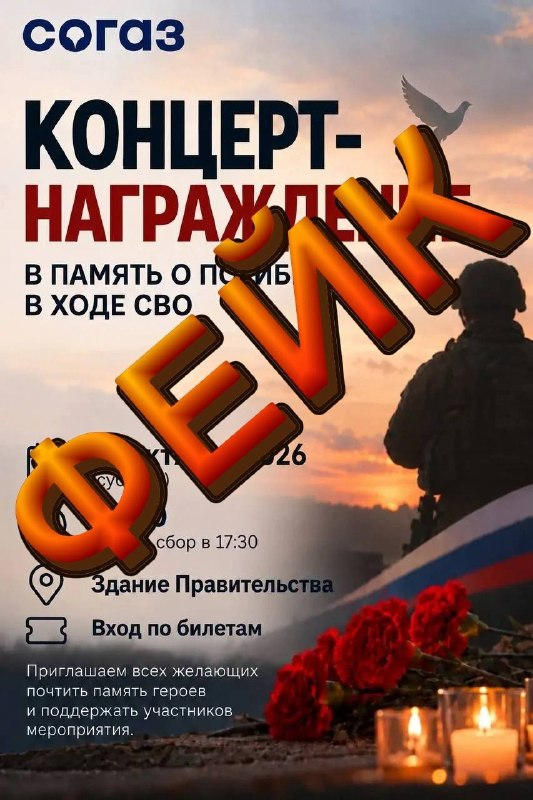

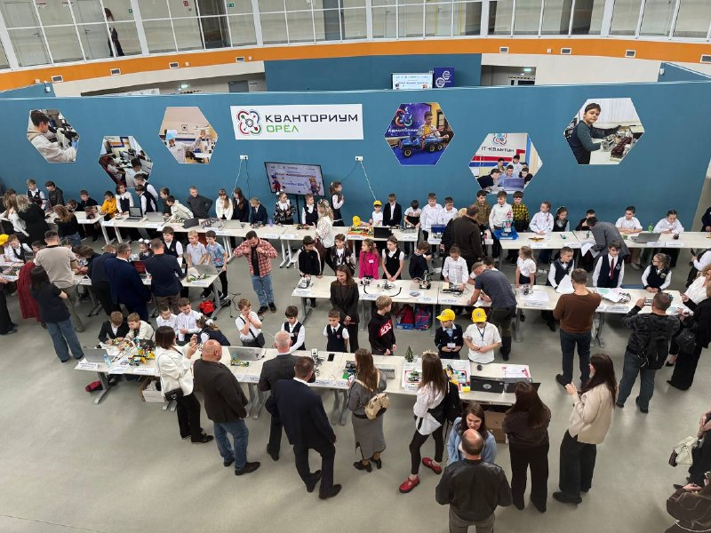
А еще-горящие глаза и желание быть первыми! Очень рад присутствовать здесь!
Почему стоит выбрать именно этот дом: 📌 Заселение без ожидания — дом сдан, ключи в день сделки.…
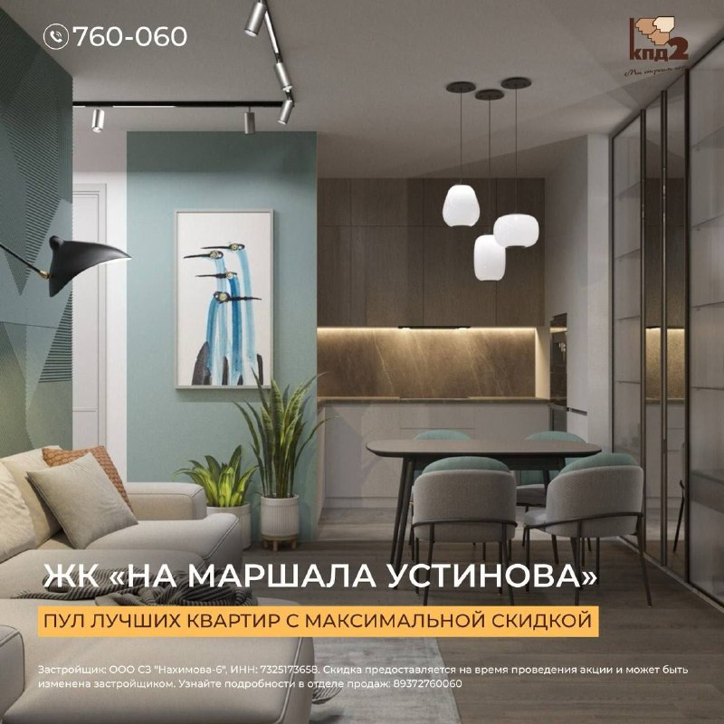
Напишите, пожалуйста, какая УК обслуживает ваш дом и насколько вы довольны её работой?…

Оформление 2 минуты, роутер приезжает в ПВЗ Озон , доставка бесплатно.…
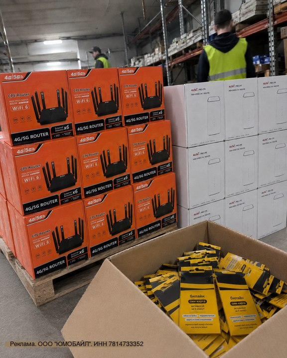
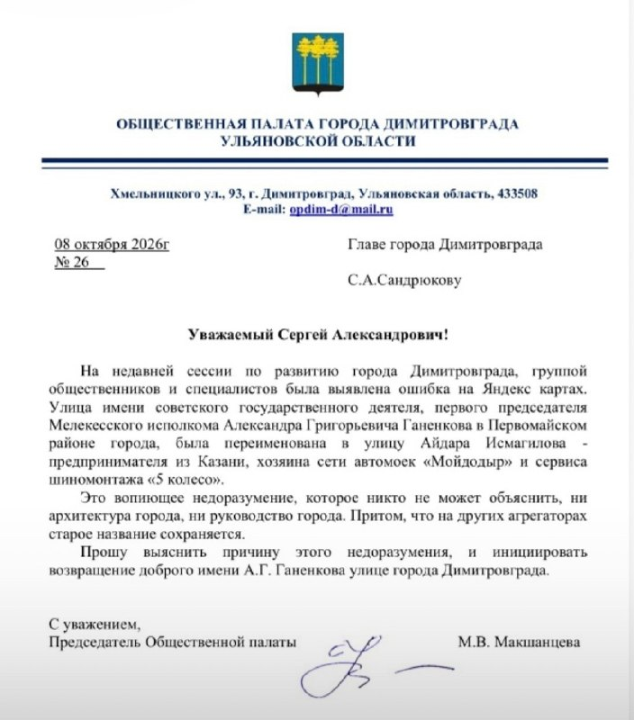
Работать они могут по той же схеме, что и букмекерские конторы. Поддерживаете?…
В 2027 году в Ульяновске увеличат поддержку программы «Мой двор», сообщил Алексей Русских.…

Переулок Федерации также обесточен от водоснабжения: там нештатная ситуация возникла на сетях около дома №179.…
Так же, как мы регулируем букмекеров, мы сейчас все опции эти изучаем», - приводит его слова ТАСС.…
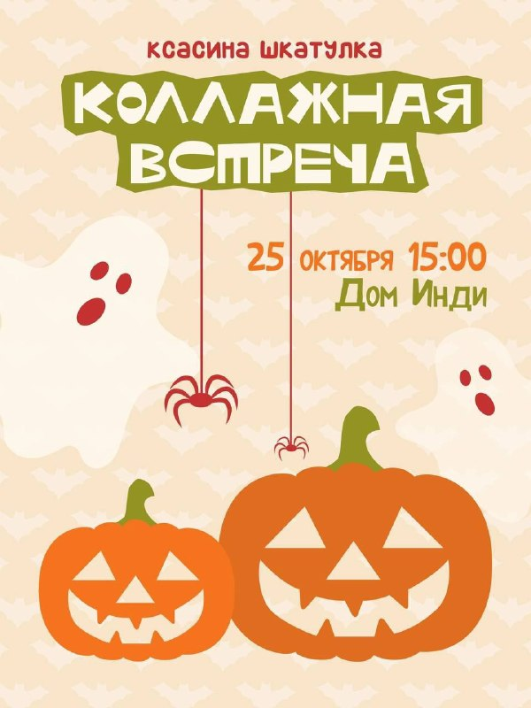
Тематикой коллажей будет, конечно, Хэллоуин, но можно вдохновляться и общей осенней эстетикой.…
Вспышка на секунду озарила салон, и раздался громкий хлопок. Люди отреагировали на явление нервным смехом.…
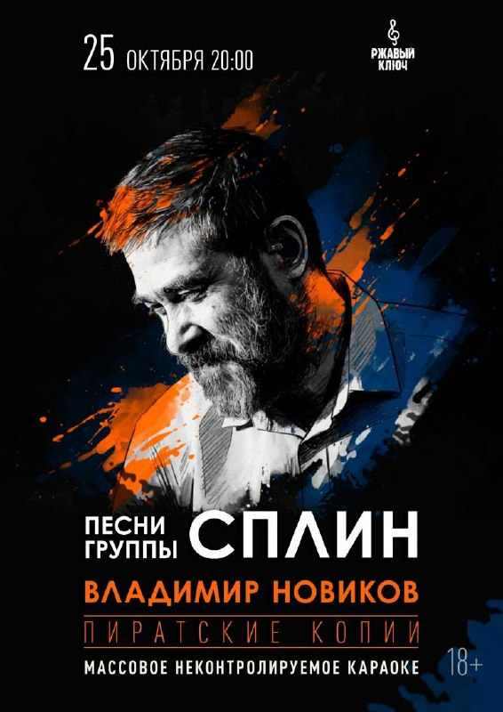
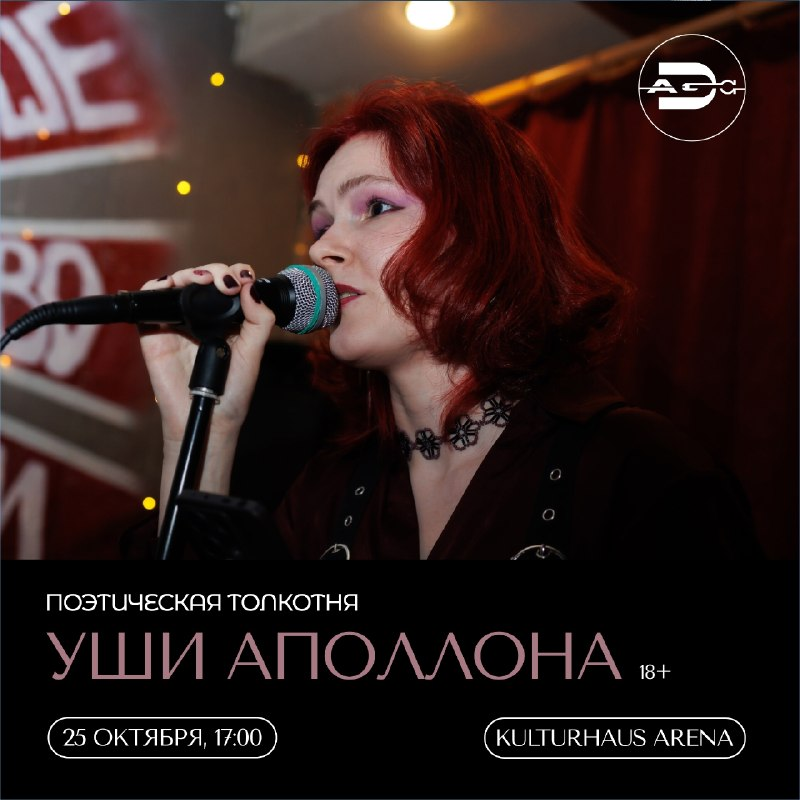
| Тема | Завтра | Ожидание | Уверенность |
|---|---|---|---|
| Суды и криминал | ↑ рост | ~41.2 упоминаний | средняя |
| Авиапром / УКБП / Ил-114 | ↑ рост | ~14.1 упоминаний | средняя |
| Городская среда | ↑ рост | ~28.0 упоминаний | средняя |
| Транспорт и дороги | ↑ рост | ~37.3 упоминаний | средняя |
| Урожай и АПК | ↓ спад | ~1.0 упоминаний | средняя |
| Экспорт и кооперация | ↓ спад | ~6.0 упоминаний | средняя |